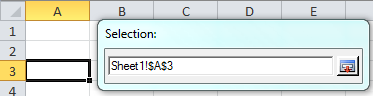

Create templates for data synchronization¶
This chapter describes creating document templates with system variables for data synchronization.
Synchronization of document metadata (e.g. title, document No., etc.)
Synchronization of 1:1 referenced objects (e.g. project name of the assigned project)
Transfer 1:N referenced objects (e.g. list with open issues)
Format description for system variables¶
System variables in Excel documents have the following format: cdb.<Mode>.<Relation>.<Attribute>.<Cardinality>
- Mode
The mode indicates whether a variable may be read from the system exclusively or updated after changing in the document in the system. Valid values for the mode include:
r
Only data transfer from the system possible. The transfered value can be changed in the document, but not transferred to the system. The changed value in the document is replaced again by the sytem value when transferring the data again.
w
Only data transfer to the system possible. This mode can be used to ensure that a document field cannot be changed by a data transfer, though an update is possible in the system (useful for fields calculated by the document). This mode cannot be used for 1:N relationships.
rw
Data transfer from the system and update in the system possible after changing in the document. This mode cannot be used for 1:N relationships.
*s
If a s is added to the above-mentioned mode values (i. e. rs, ws or rws), then the same rules apply as for the respective values without s, but the read/write actions run completely on the server side. The Parameter field can be used optionally. You might, however, need administrative customizing to use server-side editing of variables, which is explained in the OfficeLink Administration Manual.
- Relationship
Starting from the document, the relationship indicates the path for the data in the system represented by the variable. The following expressions can be used as a relationship:
this
The constant expression ‘this’ is used to specify the attributes of the document itself.
Name of a relationship configured in the system
Attributes of referenced objects can be transferred and synchronized via a relationship.
BY_ZNUM_ZIDX_FROM_<table_name>
Use an implicit relationship via the attributes z_nummer and z_index. To do so, the expression BY_ZNUM_ZIDX_FROM_<table_name> is specified. table_name indicates the database table used to reference an object implicitly via z_nummer and z_index. The specified database table must contain the attributes z_nummer and z_index and the combination of z_nummer and z_index must be unique.
- Attribute
The attribute specifies an attribute of a system object referenced by the relationship.
Subject characteristics as attributes of parts:
If a part relationship is specified as a relationship, the subject characteristics of the part can also be specified as an attribute. This can be carried out in a qualified manner via property identification or unqualified using the sequence number:
Qualified subject characteristics:
_SML_<mm_mk>Excel: data synchronization - qualified subject characteristics
Subject characteristics with the identification ‘L’ of the associated part
"cdb.r.cdb_doc_to_part._SML_L"
Unqualified subject characteristics:
_SMLN<nummer> for characteristic identifications_SMLV<nummer> for characteristic valuesProperty identification and the associated value must have the same number for this.
Excel: data synchronization - unqualified subject characteristics
Identification and value of the first subject characteristic of the associated part
"cdb.r.cdb_doc_to_part._SMLN1" "cdb.r.cdb_doc_to_part._SMLV1"
Important
SC attributes cannot be synchronized with write access!
- Cardinality
Specifies the cardinality of the relationship. If no cardinality has been specified, cardinality 1 is assumed. The cardinality should be specified explicitly when creating new document templates. The following values can be used for the cardinality:
1
For relationships of the type
this, BY_ZNUM_ZIDX_FROM_<table_name>and for 1-digit homogeneous relationships.N
For n-digit homogeneous relationships. Variables that use n-digit relationships must be positioned by column in the header of a list (see usage of system variables in the document). When synchronizing with the system, the list is adapted to the number of rows required for displaying the result. The first line after the header is used as a style sheet for this. The list is sorted based on the first column.
Excel: data synchronization - system variables
Document number of the document:
"cdb.r.this.z_nummer"
Transfer and synchronization of the document remark:
"cdb.rw.this.z_bemerkung"
Transfer of the part number of the associated part:
"cdb.r.cdb_doc_to_part.teilenummer"
Transfer and synchronization of the part name of the associated part:
"cdb.rw.cdb_doc_to_part.benennung"
Transfer of the reason of the change history via implicit relation:
"cdb.r.BY_ZNUM_ZIDX_FROM_aenderung.begruend"
- Synchronization of floating points to the system
The Excel decimal separator depends on the region and language options configured in the Windows control panel. For attributes defined in the system as float, before synchronizing, you have to change the decimal separator from a comma to a dot, where necessary. .numeric must be appended to the variable expression of the document variables so that the link recognizes these types of attributes and can correct the decimal separator.
cdb.rw.cdbpcs_doc2project.effort_plan.1.numeric
- Parameter
This field can be used to pass additional constant values specific to the respective variable when processing variables on the server side. These can be identifiers, for example, that allow you to link results from 1: N relationships with individual document fields instead of dynamic lists. For example, the parameter PRIMARY is added to the following variable, which tells a user exit that you want to have the original source name of the document’s primary file.
cdb.rs.document2cdb_file.cdbf_original_name.N.string.PRIMARY
Definition of system variables¶
System variables are defined using a wizard that calls up the OfficeLink toolbar using the [ Manage ] button. The button has to have been enabled beforehand in the settings dialog so that the button is available. The dialog provides the option of creating new variables in the sytem format on the left side (see Format description for system variables). On the right side, all system variables contained in the document are displayed. Marking a variable also marks the corresponding cell in the Excel table at the same time. The marked variables are removed from the document by pressing the [ Delete variable ] button.
Excel: data synchronization - dialog for creating system variables
Relationship:
Starting from the document, the relationship indicates the path for an attribute of one or more referenced sytem objects. The catalog provides all document relationships configured in the system, for which the document is the start object. For attributes of the document itself, you have to enter
thisin this field.To use an implicit relationship that is produced via the key attributes document number and index, you have to select
BY_ZNUM_ZIDX_FROM_in this field and select a relation as a data source in the database table field.Database table:
A database table has to be selected only if the special entry
BY_ZNUM_ZIDX_FROM_for implicit relationships has been selected in the relationship field. In the selected relation, the combination of the attributes z_nummer and z_index has to be unique.Attribute:
The attribute specifies an attribute of a system object referenced by the relationship.
Synchronization mode:
The mode indicates whether a variable may be read from the system exclusively or may be updated after changing in the document in the system.
r: read only
w: write only
rw: read and write access in the system
rs: server-side read only
ws: server-side write only
rws: server-side read and write access in the system
Parameter:
Optional value used only for server-side editing of variables.
Relates to:
In this field, you have to specify the cell in which the system variable is to be displayed. The Excel cell should be selected from the catalog. When opening the catalog, the dialog for the variable configuration is hidden and a selection window appears for the Excel cell. The Excel cell can be selected and then committed by clicking the desired cell.
Excel: data synchronization - selecting a cell
System variable:
In this field, the expression generated from the other fields is shown for the system variables to be created. The manual modification of this expression is only required for specifying subject characteristics for part relationships.
When adding the variables by pressing the [ Add variable ] button, the expression shown in the system variable field is reviewed and displays a corresponding error message if invalid. Otherwise, the variables are created as new system variables in the active document and initialized with the <Attribut> value as a placeholder. Cells to which a name refers assume the value of the associated system attribute when updating. A name can also be referenced by additional cells. These cells also assume this value.
Using system variables in the document¶
System variables should be identified for the user in the document to avoid accidental deleting or overwriting. Document variables can be protected in Microsoft Office Excel by locking the corresponding cells. You have to enable sheet protection so that this protection is active. Here, a password must not be assigned since the link temporarily lifts this sheet protection during the data synchronization. If a password has been specified when the sheet protection was enabled, the user is prompted to enter a password during the data synchronization. If the password is not entered or entered incorrectly, the data synchronization fails.
Note
During the data synchronization of variables to the system, attribute changes are also shown if the field cannot be changed by the user interactively according to the mask configuration or would only be able to be changed using a list of options. You have to take this into account when using System-Variables with write access. If necessary, the validity of the values must be ensured through a corresponding check in the user exit.
System variables that use n-digit relationships have to be positioned in Excel by column in the header of a list. When synchronizing with the system, the list is adapted to the number of rows required for displaying the result. The first line after the header is used as a style sheet for this. The list is sorted based on the first column.
Lists/tables in Microsoft Office Excel for n-digit relationships:
Insert lists/tables with two rows and the desired number of columns.
Insert system variables into the first row using the wizard (see Definition of system variables). All variables have to use the same relationship for this and be of the cardinality N.
Change the placeholder of the system variables in the desired column titles and format as desired.
Format the second row. This line is used as a master copy for pasting additional rows for the data synchronization.
Excel: data synchronization - list/table for n-digit relationships [empty]
When carrying out a data transfer, the table is expanded to the necessary number of rows and filled with the set of results for the relationship used.
Excel: data synchronization - list/table for n-digit relationships [filled]
Updating metadata automatically¶
The metadata of all system variables with read access are committed from CDB automatically when loading a document. The conditions for this are that the document:
Has been opened in the client in “Edit” mode (or directly from Office via “Load”)
Is a “Drawing” (i.e. has the property “vorlage_kz”)
Is not a template (i.e. “vorlage_kz=0”)